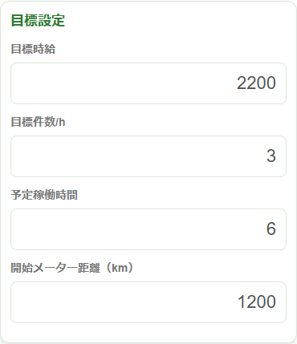
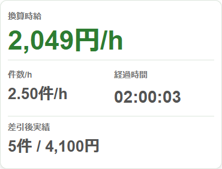
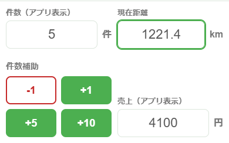
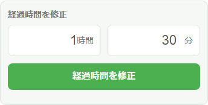
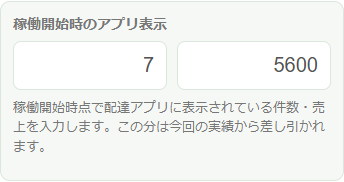
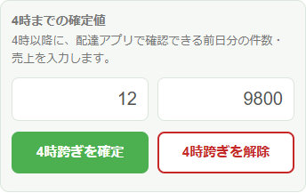
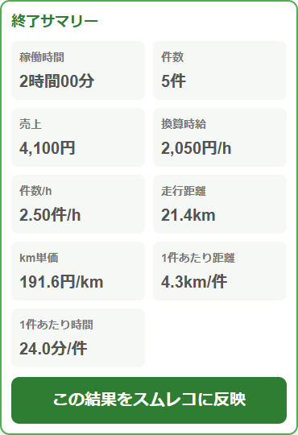
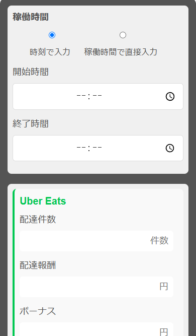
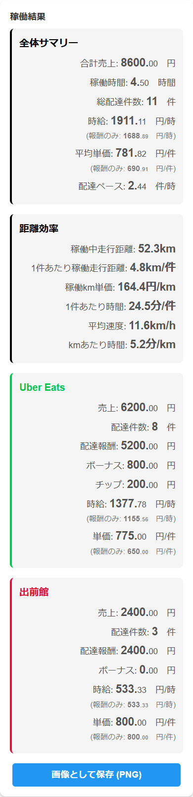

このページでわかること
配達ペースチェッカーは、稼働中に「今の売上」「今の件数」「今の距離」を入れて、今のペースを確認する画面です。
スムレコは、稼働が終わったあとに時間、件数、売上、距離をまとめて、時給や1件あたりの金額を確認する画面です。
配達中は、画面下の「定型文」と「ペース」で、スムコピと配達ペースチェッカーをすぐ切り替えられます。
配達開始前：目標と開始時点を入れる
配達を始める前に、今日の目標と開始時点の数字を入れます。入力した数字は、あとでペース計算に使われます。

上の方に今のペース、下の方に入力欄があります。
- 「目標時給」に、今日目指したい時給を入れます。
- 「目標件数/h」に、1時間あたり何件を目指すか入れます。
- 「予定稼働時間」に、今日は何時間くらい動くか入れます。
- バイクや車のメーターを見る人は、「開始メーター距離」を入れます。
- 準備できたら「稼働開始」を押します。
配達アプリに、すでに今日の件数や売上が表示されている場合は、「稼働開始時のアプリ表示」にその数字を入れてください。その分は今回の稼働から引かれます。
配達中：件数・売上・距離を更新する
配達アプリを見ながら、今の件数と売上を入れます。距離を見る人は、今のメーター距離も入れます。

例では、2時間で5件、4,100円の状態です。
- 「換算時給」は、このままのペースなら時給いくらくらいかを表示します。
- 「件数/h」は、1時間あたり何件くらい運べているかです。
- 「目標との差」は、目標より上か下かを見るところです。

件数は「+1」「+5」「+10」でも増やせます。間違えた時は「-1」を押します。
休憩するときは「一時停止」を押します。再開するときは同じ場所のボタンを押します。
お客様へ連絡したいときは、画面下の「定型文」を押すとスムコピへ移動できます。ペース確認に戻るときは、スムコピ画面下の「ペース」を押します。
補正とリセット：数字がずれた時に直す
「補正とリセット」は、配達中の表示が実際と合わなくなった時に使います。普段はさわらなくて大丈夫です。
経過時間を修正
稼働開始ボタンを押し忘れた時や、アプリ上の経過時間と実際に動いた時間がずれた時に使います。
例：10時から配達していたのに、11時30分に稼働開始を押した場合は、実際の経過時間に合わせて直します。

稼働開始時のアプリ表示
前回の稼働が日またぎで終わり、配達アプリに前回の件数や売上が残っている時に使います。
ここに開始時点の件数と売上を入れると、その分を今回の実績から引いて計算します。前回分を今回分に混ぜないための入力です。

4時までの確定値
日またぎで稼働していて、配達アプリ側の数字が締められて0に戻った時に使います。
4時までの件数と売上をここに入れると、0に戻る前の分も今回の実績に足して計算できます。

どれを使えばよいか迷った時は、「押し忘れは経過時間」「前回分を引きたい時は稼働開始時のアプリ表示」「0に戻った前半分を足したい時は4時までの確定値」と覚えると使い分けやすいです。
配達完了後：終了して結果を残す
今日の配達が終わったら、入力した件数・売上・距離が合っているか確認してから「稼働終了」を押します。

- 終了サマリーで、稼働時間、件数、売上、時給、距離を確認します。
- スムレコでもまとめたい場合は「この結果をスムレコに反映」を押します。
- 続きで配達する場合は「稼働再開」を押します。
- 別の稼働として始めたい場合は「新規稼働開始」を押します。
スムレコ：1日の結果をまとめて見る
スムレコでは、稼働時間、各配達アプリの件数・売上、走行距離を入れて、1日の結果をまとめます。

- 開始時間と終了時間を入れます。
- Uber、出前館、menu など、使った配達アプリの件数と売上を入れます。
- 必要ならボーナス、チップ、走行距離も入れます。
- 最後に「計算」を押します。

時給、平均単価、配達ペース、距離まわりの数字がまとめて表示されます。
結果を残したいときは「画像として保存」を押すと、画面を画像で保存できます。